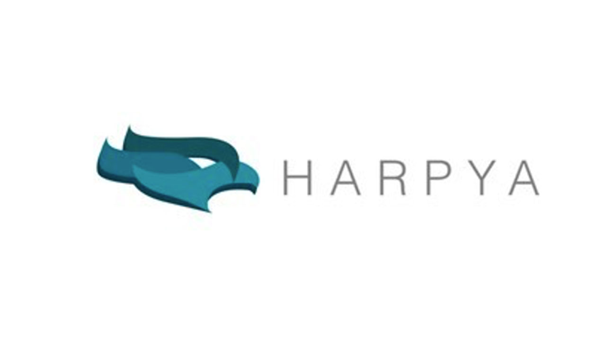
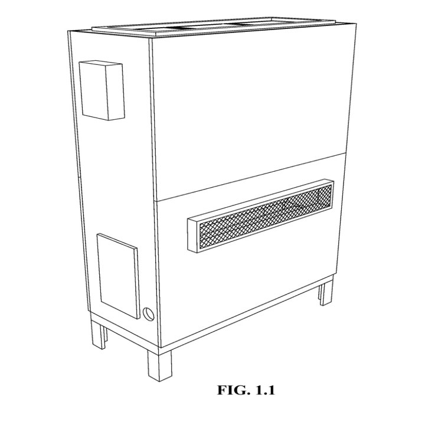
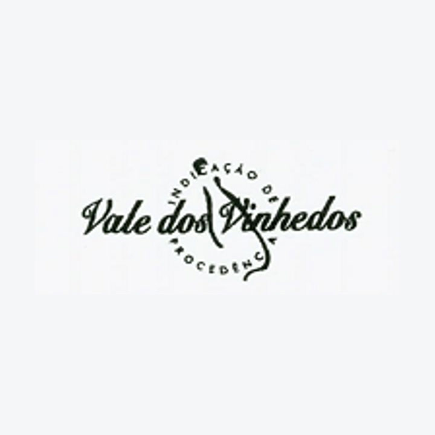
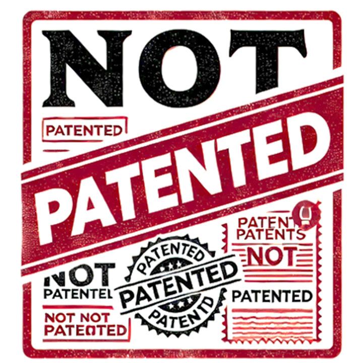

Módulo 2 . Aula 4
Marcas, desenho industrial, indicação geográfica e
patente
Módulo 2 . Aula 4
Marcas, desenho industrial, indicação geográfica e
patente
 Objetivos da
aula
Objetivos da
aula
A partir da Propriedade Intelectual, campo do Direito que se dedica a proteger as criações do intelecto humano, passamos agora a abordar o ramo da Propriedade Industrial. Esta aula introduz os conceitos de marcas, desenho industrial, indicação geográfica e patentes. Ao final, você será capaz de:
- Compreender os conceitos de marca, desenho industrial e indicação geográfica e, especialmente, o conceito de patente, seus requisitos, formas de proteção e período de vigência.
- Conhecer os principais requisitos, formas de proteção e período de vigência.
- Entender a necessidade de equilíbrio entre a proteção à inovação e o direito de acesso ao conhecimento.
- Diferenciar invenção de inovação.
- Identificar as principais formas de transferência de conhecimento.
- Conhecer a legislação correspondente.
Marcas
As marcas são descritas como sinais distintivos visualmente perceptíveis, desde que não estejam sujeitos a proibições legais específicas. Para uma compreensão mais abrangente do conceito, marcas são elementos capazes de serem aplicados em mercadorias, produtos ou serviços, estabelecendo uma conexão identitária entre o consumidor ou usuário e o produto ou serviço em questão.
A marca registrada garante ao titular o direito exclusivo de usá-la para identificar produtos ou serviços. Isso evita que outras empresas utilizem sinais semelhantes que possam causar confusão entre os consumidores. As marcas também podem ser licenciadas ou vendidas/cedidas, e seu valor pode aumentar significativamente com o tempo, à medida que a reputação da marca cresça.
No Brasil, as marcas são protegidas pelo INPI, e sua vigência é de 10 anos, sendo possível prorrogações sucessivas pelo mesmo período. Essa diferença na forma de proteção que garante prorrogações sucessivas, a depender da vontade do titular, torna a marca um ativo de propriedade intelectual ímpar e com proteção duradoura, diferentemente dos outros ativos de Propriedade Intelectual.
A marca "Apple" e seu logotipo são exemplos de como as marcas são utilizadas para se diferenciar no mercado e criarem valor. Podemos observar outros exemplos de marcas de produtos e serviços protegidos até mesmo por instituições públicas, como disposto a seguir.

Marca de Produto
Nº do Processo: 911822356.
Titular: Fundação Oswaldo Cruz.
Marca de Serviço
Nº do Processo: 916059650.
Titular: Fundação Oswaldo Cruz.
Desenho Industrial
Desenho Industrial (DI) é uma forma de proteção intelectual que se aplica à aparência estética de um produto ou objeto industrial. Ele protege o design ornamental ou estético, ou seja, a forma externa, a configuração, o padrão ou a combinação de cores de um objeto que o torna visualmente atrativo e distinto. O desenho industrial não protege aspectos funcionais ou técnicos do objeto, apenas sua aparência. O design deve ser novo e original, ou seja, não pode ter sido divulgado anteriormente ou ser uma cópia de outro já existente.
O desenho deve ser aplicável industrialmente, o que significa que ele pode ser reproduzido em série a partir de um processo industrial. Se aprovado, o desenho industrial é registrado, conferindo ao titular o direito exclusivo de exploração por um período de até 25 anos (10 anos iniciais, renováveis por mais três períodos de cinco anos cada).
Embalagens de produtos podem ser exemplos de ativos que podem ser protegidos por DI, assim como o design de móveis, utensílios domésticos, ou eletrônicos, como o design característico de uma cadeira, de um smartphone ou até mesmo de um equipamento, como no exemplo a seguir.

DI Processo nº BR 30 2020 002283 1.
Título do DI: configuração aplicada a/em equipamento para condicionamento de ar.
Titular: Fundação Oswaldo Cruz.
Autor: Bruno Perazzo Pedroso Barbosa.
Indicações Geográficas
Indicações Geográficas (IG) é um tipo de proteção concedida a produtos que possuem origem geográfica específica e cuja qualidade, reputação ou outras características são essencialmente atribuídas a essa origem. De acordo com o artigo 176 da LPI, “constitui indicação geográfica a indicação de procedência ou a denominação de origem”.
A IG garante que apenas produtos originários de uma determinada região possam utilizar o nome geográfico associado a eles, protegendo assim o nome e preservando a autenticidade e a qualidade dos produtos.
Indicação de Procedência
Refere-se ao nome geográfico de um país, cidade, região ou localidade que se tornou conhecido como centro de extração, produção ou fabricação de determinado produto. Exemplo: "Vale dos Vinhedos" para vinhos produzidos nessa região do Brasil.

Indicação Geográfica: Vale dos Vinhedos.
Produto: Vinho tinto, branco e espumantes.
Publicação da Concessão: RPI nº 1663, de 19 de novembro de 2002.
Denominação de Origem
Vai além da Indicação de Procedência, pois exige que as qualidades ou características do produto sejam essencialmente ou exclusivamente devidas ao meio geográfico, incluindo fatores naturais e humanos. Exemplo: "champanhe" para os vinhos espumantes produzidos na região de Champagne, na França.
Patentes
A Propriedade Industrial abrange patentes, marcas, desenhos industriais, indicações geográficas e a repressão à concorrência desleal. A Lei de Propriedade Industrial brasileira, Lei nº 9.279/1996, trata especificamente desses institutos da propriedade industrial, enumerando quais são seus requisitos, formas de proteção, vigência etc.
Você sabe quem é o “dono” da patente? Ouça o podcast a seguir.
Direitos concedidos pelas patentes
A patente é um direito exclusivo concedido pelo Estado ao titular de uma invenção, permitindo que ele impeça outros, por exemplo, de fabricar, usar, vender ou distribuir a invenção sem sua permissão por um período limitado — geralmente 20 anos a partir da data de depósito do pedido de patente de invenção e 15 anos para patentes de modelo de utilidade. Esse direito é concedido no Brasil pelo Instituto Nacional da Propriedade Industrial (INPI).
Os direitos conferidos ao titular de uma patente são territoriais, isto é, são válidos apenas nos países onde a patente foi protegida.
Dessa forma, se for estratégico, o titular precisa solicitar proteção em cada país de interesse para garantir que sua invenção esteja protegida em diversos países e territórios.
Exclusividade Temporária versus Divulgação da Invenção
O conceito de exclusividade temporária é central na Propriedade Intelectual, especialmente no contexto das patentes. Quando um inventor ou titular deposita um pedido de patente e sua solicitação é deferida pelo INPI, ele tem o direito exclusivo de explorar sua invenção por um período determinado — 20 anos para patentes de invenção e 15 anos para modelo de utilidade. Em contrapartida, o inventor ou titular deve divulgar todos os detalhes técnicos da invenção para que, após o término do prazo de exclusividade, o conhecimento se torne público.
Essa divulgação é essencial para o progresso da ciência e da tecnologia, pois permite que outros inventores e pesquisadores possam construir sobre o conhecimento já existente. E a exclusividade temporária busca fornecer ao titular da patente tempo suficiente para explorar comercialmente sua invenção, recuperando os investimentos feitos em pesquisa e desenvolvimento efetuados para aquela tecnologia alcançada.
Tipos de patentes
Quanto aos tipos de patentes, podemos destacar:
Protegem uma invenção que apresente novidade, inventividade e aplicabilidade industrial.
Concedem proteção a inovações em produtos ou objetos que tenham uma forma ou disposição mais eficiente, que tragam uma nova função ou melhorem a função existente. É uma forma mais simplificada de patente, geralmente com menos rigor nos requisitos de inventividade.
Um exemplo clássico é a patente de invenção do telefone por Alexander Graham Bell, que garantiu a ele e à sua empresa o direito exclusivo de explorar essa tecnologia por um determinado período. Uma melhoria nessa criação ou um aperfeiçoamento de suas funções poderia, por sua vez, ensejar uma patente de modelo de utilidade.
Veja outros exemplos a seguir.
Requisitos de Patenteabilidade
De acordo com o artigo 8º da LPI, é “patenteável a invenção que atenda aos requisitos de novidade, atividade inventiva e aplicação industrial”. Pesquisadores consideram a suficiência descritiva de patentes como um requisito implícito para sua obtenção.
| Requisito | Descrição | Exemplo | Artigo da LPI |
|---|---|---|---|
| Novidade | A invenção deve ser nova, ou seja, não pode ter sido divulgada publicamente antes da data de depósito do pedido de patente. | Uma nova molécula para tratamento de doenças que ainda não foi descrita em nenhum documento. | Art. 11 |
| Atividade Inventiva | A invenção deve envolver um passo inventivo, ou seja, não deve ser óbvia para um especialista no campo técnico relevante. | Um novo processo de fabricação que melhora significativamente a eficiência em comparação com os processos existentes. | Art. 13 |
| Aplicação Industrial | A invenção deve ser passível de aplicação industrial, o que significa que pode ser fabricada ou utilizada em algum tipo de indústria ou processo produtivo. | Um dispositivo médico que pode ser produzido em massa e utilizado em hospitais. | Art. 15 |
| Suficiência Descritiva | A invenção deve ser descrita de maneira suficiente para que um técnico no assunto possa reproduzi-la com base na documentação fornecida. | Um pedido de patente de uma nova máquina que inclui desenhos detalhados e uma descrição de como construí-la e operá-la. | Art. 24 |
O que não pode ser protegido por patentes

O artigo 10º da Lei de Propriedade Industrial (LPI), Lei nº 9.279 de 1996, estabelece o que não pode ser considerado uma invenção ou modelo de utilidade para fins de concessão de patentes no Brasil. Esse artigo é fundamental para delimitar o escopo da proteção patentária, garantindo que apenas criações que realmente tragam uma solução técnica e inovadora sejam passíveis de proteção por patente.
Art. 10º Não se considera invenção nem modelo de utilidade:
- descobertas, teorias científicas e métodos matemáticos;
- concepções puramente abstratas;
- esquemas, planos, princípios ou métodos comerciais, contábeis, financeiros, educativos, publicitários, de sorteio e de fiscalização;
- as obras literárias, arquitetônicas, artísticas e científicas ou qualquer criação estética;
- programas de computador em si;
- apresentação de informações;
- regras de jogo;
- técnicas e métodos operatórios ou cirúrgicos, bem como métodos terapêuticos ou de diagnóstico, para aplicação no corpo humano ou animal; e
- o todo ou parte de seres vivos naturais e materiais biológicos encontrados na natureza, ou ainda que dela isolados, inclusive o genoma ou germoplasma de qualquer ser vivo natural e os processos biológicos naturais.
Entre a proteção à inovação e o direito de acesso ao conhecimento
O artigo 10 da Lei de Propriedade Industrial é essencial para manter equilíbrio entre a proteção à inovação e o acesso ao conhecimento público. Ele assegura que a proteção por patentes seja reservada para inovações técnicas que realmente oferecem uma solução prática e nova, enquanto conhecimentos científicos, descobertas e criações estéticas permanecem acessíveis e não sujeitos a monopólio.
O artigo 10º da LPI evita a monopolização de ideias e conceitos abstratos, que são fundamentais para o avanço do conhecimento e da ciência.
O artigo 10º da LPI evita a monopolização de ideias e conceitos abstratos, que são fundamentais para o avanço do conhecimento e da ciência.
Além disso, o Art. 18º da LPI, especifica situações e tipos de invenções que são excluídos da proteção patentária. Esse artigo é essencial para assegurar que a proteção por patentes não seja concedida a invenções que possam ser prejudiciais à moral, à ordem pública ou ao bem-estar da sociedade, como é o caso de produtos resultantes de transformações atômicas, e o todo ou parte de seres vivos que não atenderem aos requisitos ali previstos.
Inovar é ter uma patente? O que é inovação?
Inovação é um conceito que vai além da mera criação de algo novo ou a obtenção de uma patente, por exemplo. De acordo com o Manual de Oslo, um dos principais referenciais para a definição dessa noção, inovação envolve a implementação de um produto, serviço, processo ou método novo ou significativamente melhorado. Isso pode incluir melhorias tecnológicas, organizacionais, de marketing ou de distribuição.
A inovação é um motor fundamental para o desenvolvimento econômico, pois permite que as empresas se diferenciem no mercado e atendam melhor às necessidades dos consumidores. Exemplos de inovação incluem a introdução de tecnologias disruptivas, como os smartphones, ou novos modelos de negócios, como o streaming de música.
Embora as patentes sejam frequentemente associadas à inovação, nem toda patente representa uma inovação significativa para o mercado ou para a sociedade. Patentes protegem invenções, garantindo a exclusividade temporária para o inventor, mas a simples obtenção de uma patente não garante que o produto ou processo patenteado seja adotado amplamente, introduzido no mercado ou tenha impacto econômico.
Exemplo
Uma empresa pode desenvolver e patentear uma nova tecnologia para motores a combustão, mas, se o mercado estiver migrando para motores elétricos, essa invenção pode não se traduzir em uma inovação bem-sucedida. Portanto, a inovação ocorre quando a invenção é aplicada e introduzida no mercado de modo a impactar a sociedade de alguma forma e que possa, de alguma maneira, gerar valor, seja por meio da comercialização bem-sucedida ou da adoção em larga escala.
Transferência de conhecimento
Dessa forma, a inovação terá impacto quando o conhecimento protegido por Direito de Propriedade Industrial (DPI) é transferido ou utilizado pelo mercado resultando, por exemplo, na entrega desse conhecimento para a sociedade. Isso pode ocorrer por meio de diferentes mecanismos, tais como:
pan_tool_alt Clique Toque nas imagens para visualizar as informações.
As transferências podem ser fundamentais para garantir que o conhecimento gerado pela pesquisa em desenvolvimento seja aplicado de maneira a beneficiar a sociedade em geral.
Como citar esta aula:
D’AGUILA, Marcelo Campos. Marcas, desenho industrial, indicação geográfica e patentes. In: JORGE, Vanessa; CLINIO, Anne (coord.). Programa de Formação Modular em Ciência Aberta. Módulo 4. Marcos Legais. Rio de Janeiro: Fiocruz, 2025. Aula 4 (2ª versão). Disponível em: https://mooc.campusvirtual.fiocruz.br/rea/ciencia-aberta-2ed/modulo2/aula4.html. Acesso em: 14 nov. 2025.